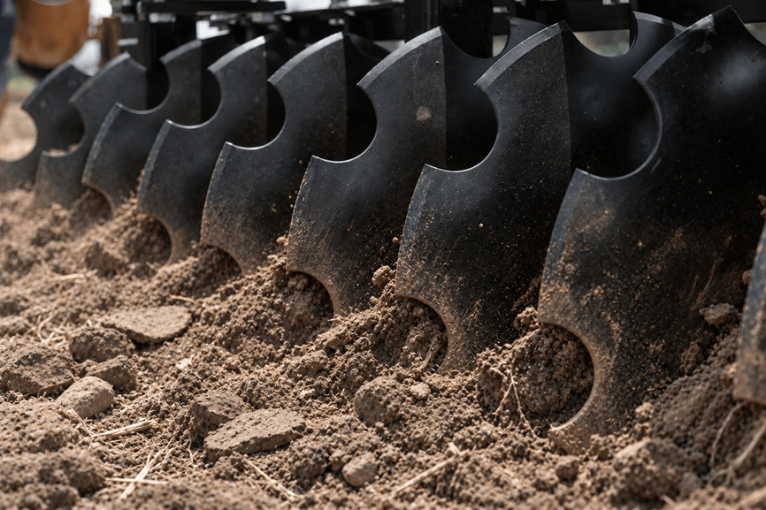
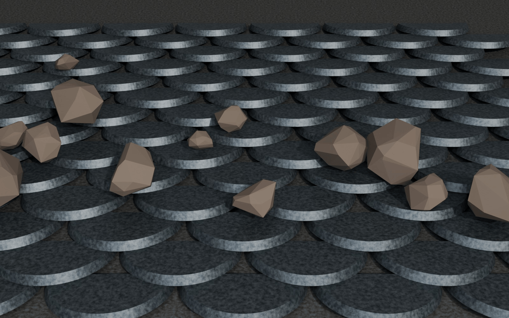
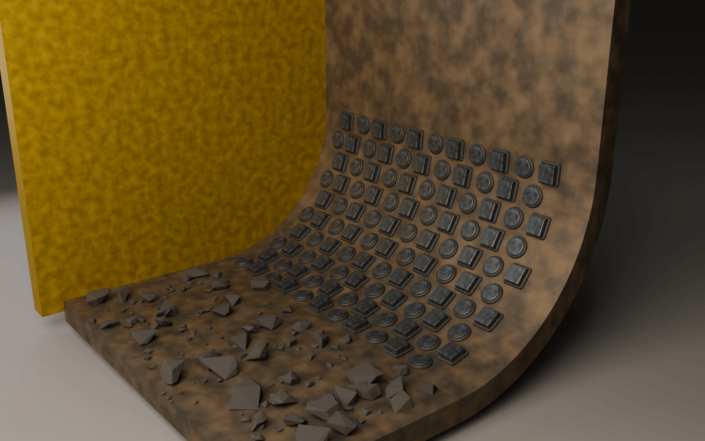
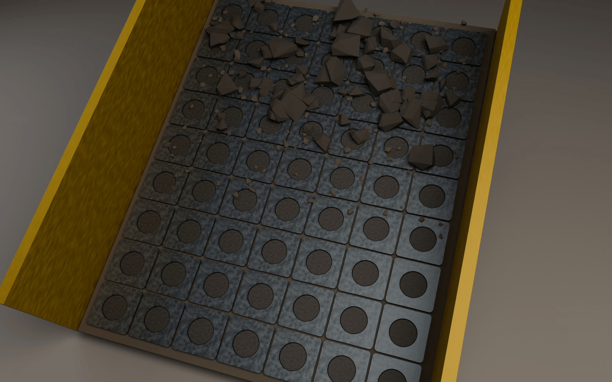
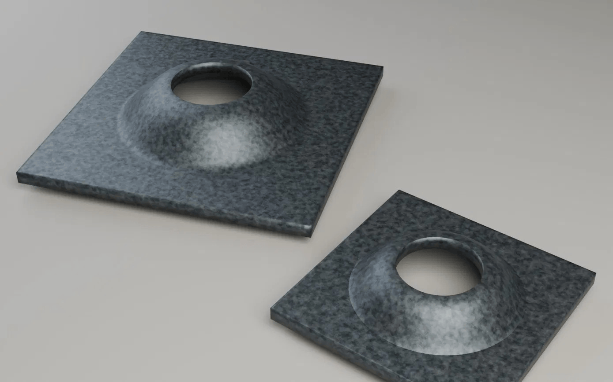
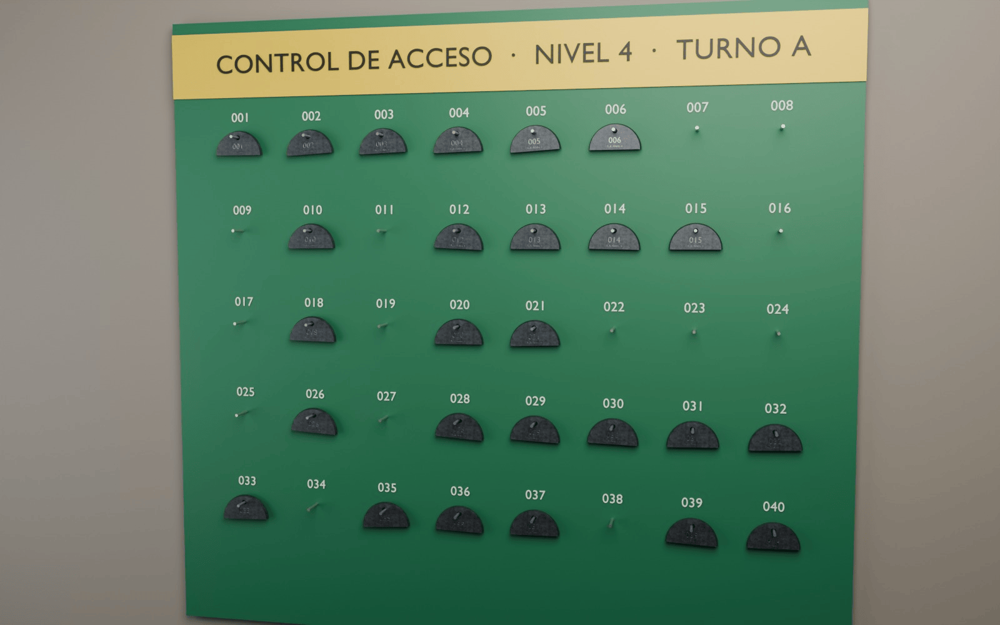
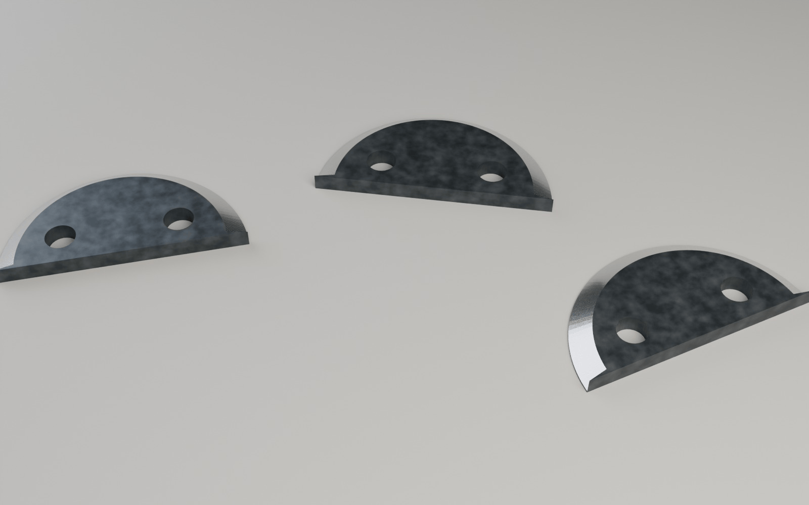
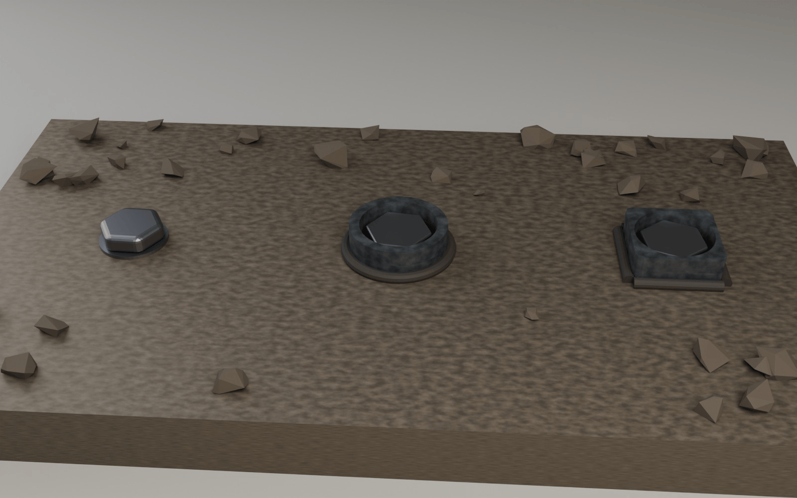

INDUSTRIAS.
KEER

1.Escamas de desgaste
La media luna completa se templa a 46 HRC y se suelda en filas traslapadas en canaletas, tolvas y cucharones.

2.Esqueleto en cascada
Placa de soporte (placa domo) para pernos de mina subterránea, placas de desgaste, calzas y botones. Recortes y barrenos: botones y rondanas.

3.Azulejos de desgaste
Azulejo de acero al boro templado, en cuadro de medidas varias. Se suelda en hileras sobre canaletas, tolvas y cucharones, y forma una capa de sacrificio contra la abrasión y el impacto.

4.Placa domo
Placa domo de 150 × 150 mm en acero al boro, compatible con pernos split set de 39 mm. Reparte la carga del anclaje y mantiene firme la roca en túneles y frentes de mina, con entrega directa desde Cuauhtémoc.

5. Fichas mineras
Cada trabajador que entra, cuelga su ficha; cada uno que sale, la retira. Fichas de acero al boro grabadas con láser para un control de personal claro y confiable en tu operación subterránea.

6.Segmentos de corte
Media luna de acero al boro con el filo curvo afilado y templado. Se atornilla en barras de corte de segadoras y desbrozadoras, y reemplaza solo el segmento gastado.

7.Rondanas de desgaste
Rondana circular o cuadrada con orificio central, de acero al boro templado. Protege el punto de apoyo en bases, soportes y uniones atornilladas sometidas a golpe y fricción.
Conoce nuestro catálogo
Conoce nuestros modelos financieros
© Copyright OHTLI CUALLI All Rights Reserved